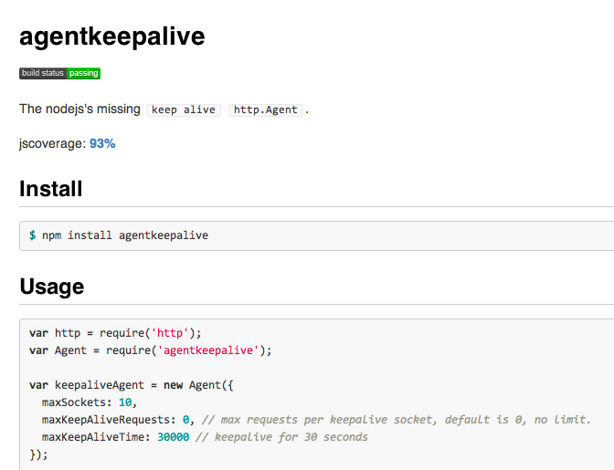
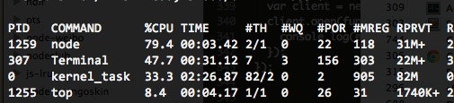

2012-09-14 at 沪JS@2012
生命是一场幻觉
@nodejs workshop on TDC2011
nodejs 近一年来，遇到过许多千奇百怪的坑绕开绕不过去的fixed它们踩上去I won't write out this obvious bug.
我不会写出这种显而易见的bug。
Code come from @TJ: connect-redis.js
RedisStore.prototype.get = function(sid, fn){
sid = this.prefix + sid;
debug('GET "%s"', sid);
this.client.get(sid, function(err, data){
if (err) return fn(err);
try {
if (!data) return fn();
data = data.toString();
debug('GOT %s', data);
fn(null, JSON.parse(data));
} catch (err) {
fn(err);
}
});
};
try {
// ...
fn(null, JSON.parse(data));
} catch (err) {
fn(err);
}
fn(null, data) throw an Error?fn(null, data) 调用抛出异常的时候，会发生什么事情？fn called twicefn(err); RedisStore.prototype.get = function(sid, fn){
sid = this.prefix + sid;
debug('GET "%s"', sid);
this.client.get(sid, function(err, data){
if (err) return fn(err);
try {
if (!data) return fn();
data = data.toString();
debug('GOT %s', data);
data = JSON.parse(data);
} catch (err) {
return fn(err);
}
fn(null, data);
});
};
keepalive. So I wrote the agentkeepalive to support this feature.keepalive。所以我写了agentkeepalive模块支持这个特性。40ms unexpectedly.40ms。
RT increase？RT增长了？40ms?40毫秒呢？40ms.1ms by this:1毫秒:# echo 1 > /proc/sys/net/ipv4/tcp_delack_min
RT delayRT延迟require('http').createServer(function (req, res) {
var start = Date.now();
req.on('end', function () {
res.end('hello world');
console.log('[%s ms] %s %s',
Date.now() - start, req.method, req.url);
});
}).listen(1984);
// agentkeepalive@0.1.0: should reappear the delay problem
var Agent = require('agentkeepalive');
var agent = new Agent();
function request(callback) {
var options = {port: 1984, path: '/fengmk2',
method: 'POST', agent: agent};
var start = Date.now();
var req = require('http').request(options, function (res) {
res.on('end', function () {
console.log('[%s ms] %s',
Date.now() - start, res.statusCode);
callback();
});
});
req.write('foo');
process.nextTick(function () { req.end('bar'); });
}
function next() {
setTimeout(function () { request(next); }, 1000);
}
next();
$ node nagle_delayed_ack_server.js
[1 ms] POST /fengmk2
[40 ms] POST /fengmk2 // increase 40ms
[38 ms] POST /fengmk2
[38 ms] POST /fengmk2
$ node nagle_delayed_ack_client.js
[7 ms] 200
[41 ms] 200 // increase 40ms
[40 ms] 200
[40 ms] 200
40ms from the second request40msvar s = http.Agent.prototype.createSocket.call(this, name, host,
port, localAddress, req);
s.setNoDelay(true);
Read more: 模拟 Nagle 算法的Delayed Ack
high in ReplSet mode!高！Arbiter 有异常。$ telnet arbiter.mongodb.fengmk2.com
Trying arbiter.mongodb.fengmk2.com...
Connected to arbiter.mongodb.fengmk2.com.
Escape character is '^]'.
Connection closed by foreign host.
Connected, then Closed immediately.ACLACLACL would blocked all unauthorized network access.ACL会拦截掉所有未授权的网络访问。var mongodb = require('mongodb');
var count = 0;
var blackhole = require('net').createServer(function (c) {
console.log('new connection: ' + count++);
c.end();
});
blackhole.listen(24008, function () {
var replSet = new mongodb.ReplSetServers([
new mongodb.Server('127.0.0.1', 24008, {auto_reconnect: true})
]);
var client = new mongodb.Db('test', replSet);
client.open(function (err, p_client) {
console.log(err);
});
});
$ node mongodb_blackhole.js
new connection: 0
new connection: 1
new connection: 2
new connection: 3
...
new connection: 3326
new connection: 3327
new connection: 3328
new connection: 3329
new connection: 3330
new connection: 3331

/lib/mongodb/connection/connection_pool.js ./lib/mongodb/connection/connection_pool.js 。connection.on("connect", function(err, connection) {
// Add connection to list of open connections
_self.openConnections.push(connection);
// If the number of open connections is equal to the poolSize
if(_self.openConnections.length === _self.poolSize && _self._poolState !== 'disconnected') {
// Set connected
_self._poolState = 'connected';
// Emit pool ready
_self.emit("poolReady");
} else if(_self.openConnections.length < _self.poolSize) {
// need to open another connection, make sure it's in the next
// tick so we don't get a cascade of errors
process.nextTick(function() {
_connect(_self);
});
}
});
openConnections.length < poolSize, pool will create a new connection in nextTick.emit('close'), this openConnections.length will be cleanup to 0.connection.on("close", function() {
// If we are already disconnected ignore the event
if(_self._poolState !== 'disconnected' && _self.listeners("close").length > 0) {
_self.emit("close");
}
// Set disconnected
_self._poolState = 'disconnected';
// Stop
_self.stop();
});
Infinite loop, open, close, open, close...一瞬间的事情'Thanks') 'end');/
#